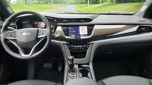
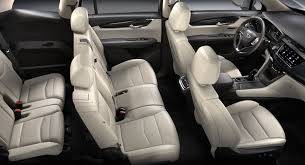
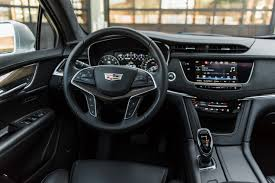
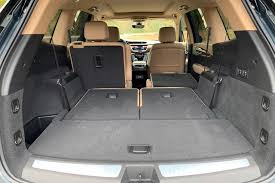
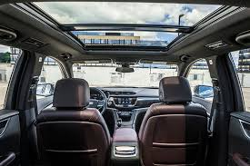
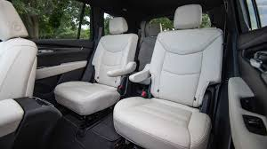

Cardilac XT5
The Cadillac XT5 (short for Crossover Touring 5) is a compact luxury/ D-segment crossover SUV manufactured by General Motors. It was introduced at both the Dubai Motor Show and LA Auto Show in November 2015. The XT5 replaced the Cadillac SRX crossover when it was launched in spring 2016. It is the second model to use Cadillac's new alphanumeric naming scheme (after the CT6) and the first in the Crossover Touring (XT) series. The XT5 is manufactured at GM's Spring Hill Manufacturing plant. The Chinese-market XT5 is manufactured in Shanghai by SAIC-GM.
The XT5 features technology such as a streaming video rear-view mirror, 360° view backup camera, and the first application in a Cadillac of GM’s Electronic Precision Shift, which replaces the standard hydraulic shifter with an electronic controller. This, together with a new lightweight chassis, results in a weight savings of 278 lb (126 kg) versus the outgoing SRX.
The XT5 was initially available with only one engine, depending on the market. In the United States, it was a 3.6-liter V6 used in other recent Cadillac models, producing 310 hp (231 kW) and 271 lb⋅ft (367 N⋅m) torque.The V6 includes automatic stop-start and cylinder deactivation to improve fuel economy. In China, the XT5 is powered by a turbocharged 2.0-liter 4-cylinder engine producing an estimated 258 hp (192 kW) and 295 lb⋅ft (400 N⋅m) torque.


CAR INTERIOR
    
| FEATURE | TYPE |
|---|---|
| Model | Cardilac XT6 |
| Engine type | DHOC |
| Fuel System | Direct Injection |
| Transmission | Automatic |
| Stering type | Electric Power Steering |
| PRICE | R1 20000 |
Follow us